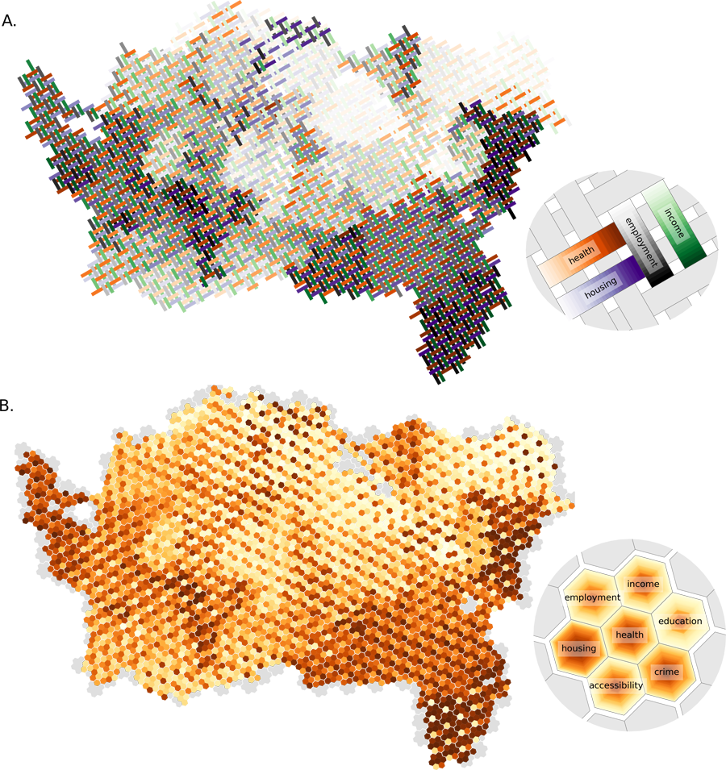
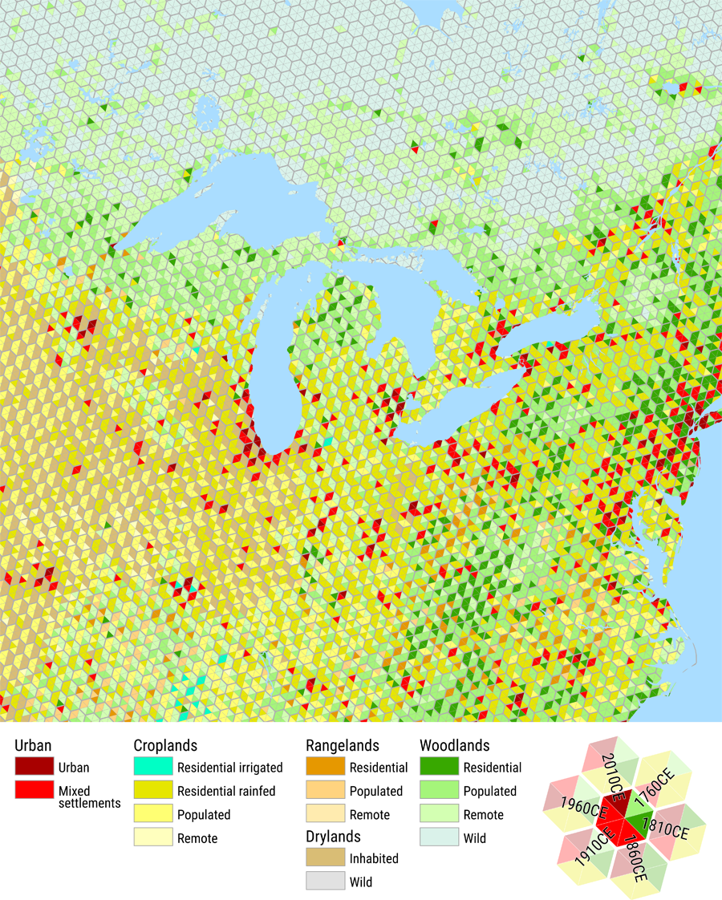
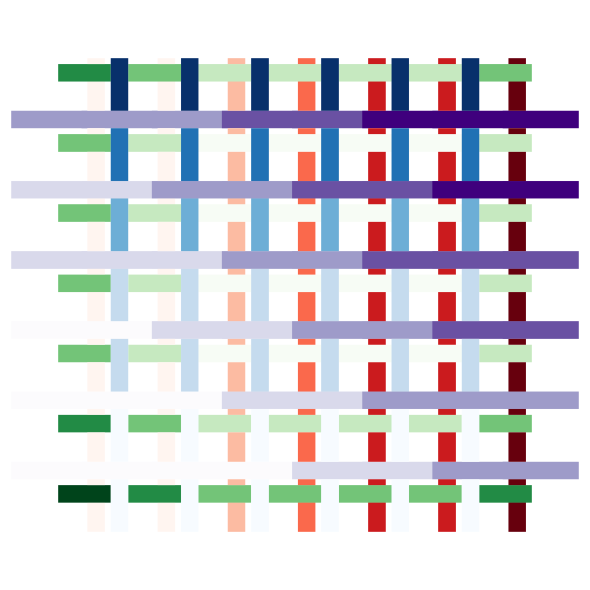
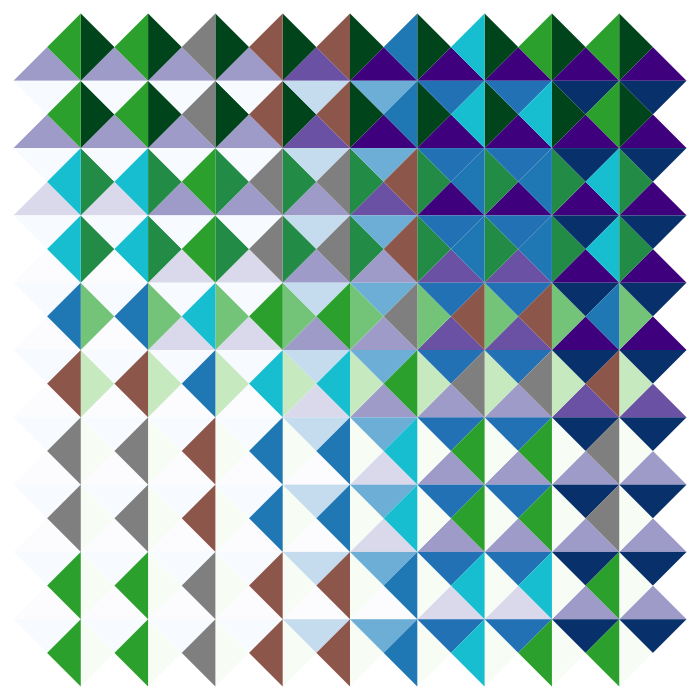
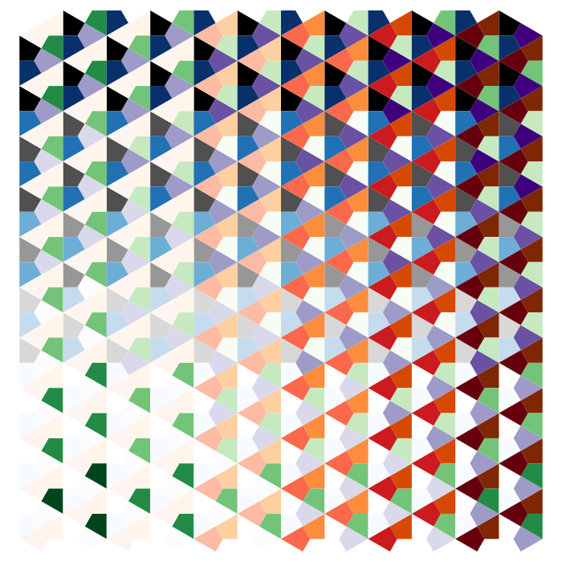
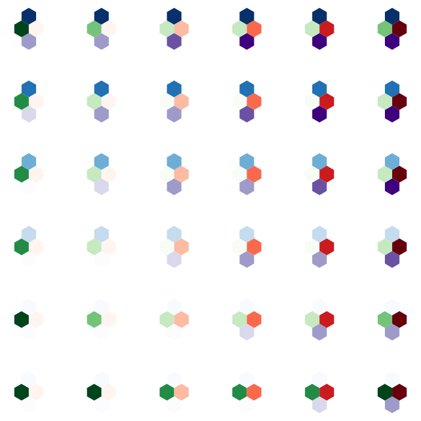
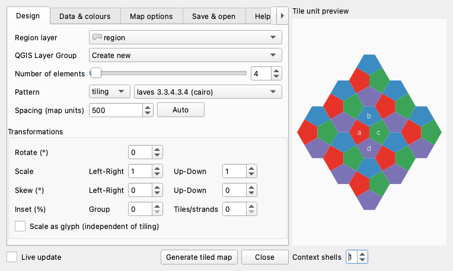

WeavingSpace: tiled and woven maps in QGIS
Mapping several attributes of the same areas in a single map remains an awkward problem. This plugin takes one particular approach to it: a small repeating pattern of shapes is laid across the study area, and each kind of shape is coloured by a different attribute, so that several variables can be read from one map rather than from a row of them side by side. The technique, its cartographic reasoning, and its limits are set out in the article listed below.


What the plugin adds to a QGIS project is not an image file but a group of ordinary GIS layers, one per pattern element, each provided with a standard graduated or categorized symbolization. Everything after that is normal QGIS work: the Layer Styling panel, GeoPackage export with styles embedded, print layouts, etc. Tilings and weaves are both available, along with grids and stripes, geometric modifiers, per-element colour ramps and opacity, and the option to draw the pattern as glyphs instead. Categorical elements can also be given a colour per value, for the many cases where a ramp will not do and forest ought to be green.

A twill weave, with gaps.

Categorical data, from an imported colour mapping.

A hex slice, offset.

The same unit drawn as glyphs.
Obtaining it
Download
the plugin (a file named weavingspace_qgis.zip, under
Assets), then in QGIS choose Plugins ▶ Manage
and Install Plugins… ▶ Install from ZIP and pick
the file.
Source, issues, and documentation: github.com/FoldingSpace/weavingspaceQGIS.
QGIS 4 or later is required.

A prototype, and how it was made
This is experimental research software and should be treated as such.
This QGIS plugin is an interface to the weavingspace library by David O’Sullivan and Luke Bergmann. By contrast, the QGIS interface here was mostly co-written by Luke Bergmann and large language models (Claude Fable and Opus, working through Claude Code). The plugin echoes and extends our earlier (also handwritten) web-based interface. You should expect rough edges, and we would rather hear about them than not.
Further reading
O’Sullivan, D., & Bergmann, L. (2026). Using MapWeaver to make tiled and woven maps of multivariate thematic data. Cartographic Perspectives, 108, 41–52. doi:10.14714/CP108.2109
O’Sullivan, D., & Bergmann, L. Tilings and weaves for multivariate mapping. Manuscript under review.
The library that does the tiling mathematics, with its own examples, is at github.com/DOSull/weavingspace. If you would like to make maps like these outside QGIS, MapWeaver is a browser-based tool built on the same library: dosull.github.io/mapweaver/app.